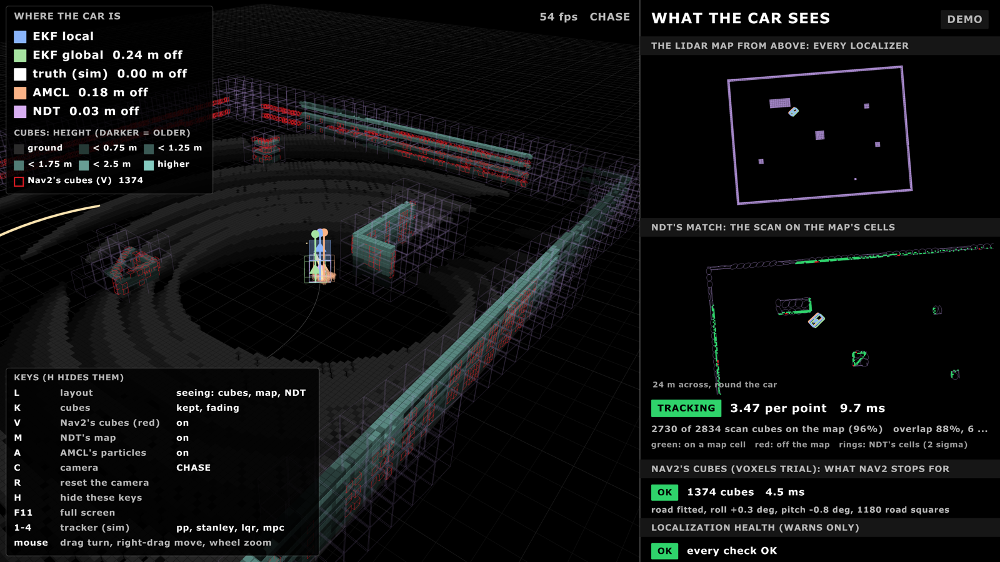
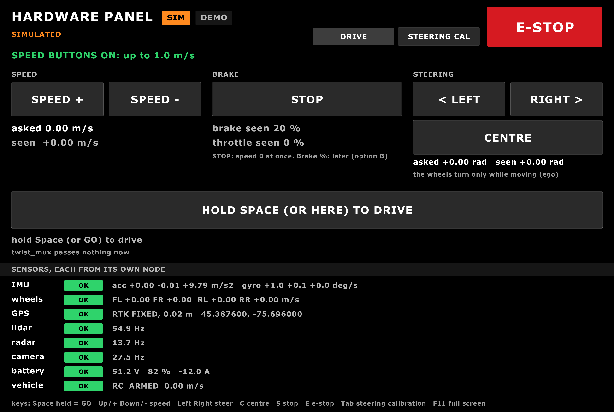
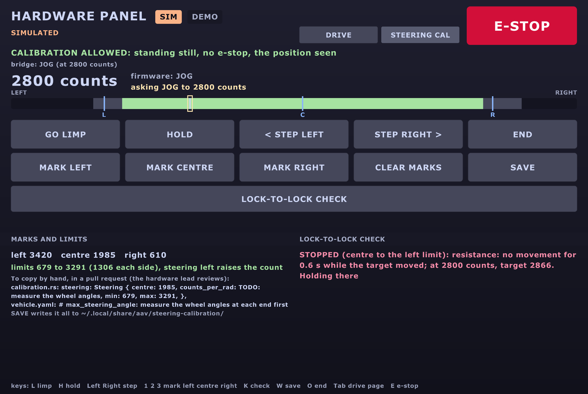
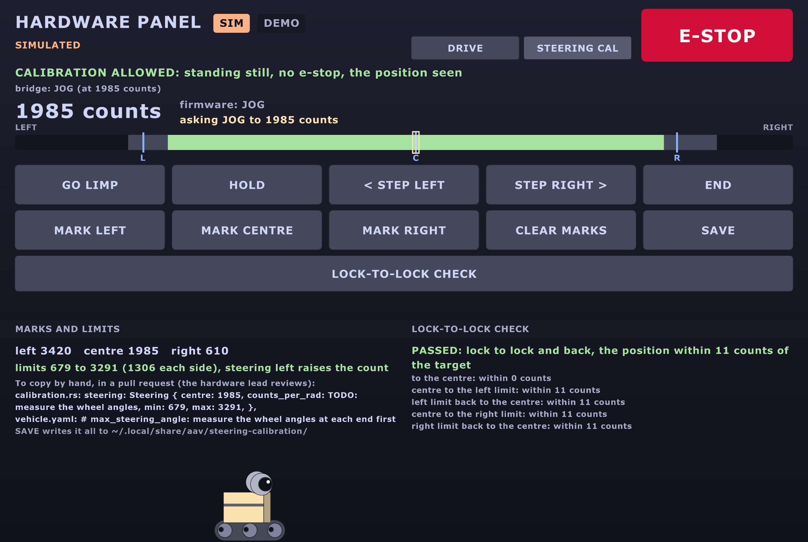

The AAV 2026–27 autonomy stack · 3 November 2026
Sim-complete, car-ready. Four screens of our own, a cockpit in Lichtblick, a joystick that stops when the pad dies, a Rust ESP32 that brakes in 0.1 s, new ways to know where the car is and to plan its path, and a car-day runbook that destroys nothing. Every part runs in Gazebo; every test passes. Next: the real car.
The detail behind every line: the 0.2 guide (its own PDF,
docs/html/aav-0.2.pdf). The words in capitals are spelled out in
The words, spelled out.
Highlights
- Five screens, one look: the HUD, the map, the debug screen, the hardware panel and the cockpit, in Initial D red and black.
- The hardware panel: every sensor's number and very simple buttons; the car moves only while you hold Space.
- Steering calibration: find the steering actuator's two ends and its centre, then a lock-to-lock check that stops at the first stiff spot.
- The cockpit: every driving detail on one Lichtblick screen, with a table of which algorithms this run uses.
- The joystick-alive check: a joystick that goes silent or freezes stops the car.
- The Rust ESP32 firmware: brakes fully 0.1 s after the Orin's heartbeat stops (the C++ never does), with Arsh's state machine.
- Where am I: two EKFs by default; AMCL, NDT, NDT-EKF and KISS-ICP as trials. NDT-EKF is 10 times closer to the truth.
- Planning: the State Lattice by default (it reverses and makes the U-turn); Hybrid-A* forward only; a diffusion planner as a trial.
- Perception: RF-DETR Nano on the camera stream sees a stop sign at 20 m (YOLO: 10 m); the lidar as a flat scan or as cubes.
- Safety in layers: e-stops, hold-to-drive, timeouts, the output mux, the sensor watchdog, collision_monitor, a 30 m geofence.
- Car day, written: Day A destroys nothing, Day B upgrades. Named roles, sign-offs,
and
car_setup.shfor each computer. - 45 commands, down from 89, and
pixi run pickto choose the switches from a menu. - The little robot: a tribute to WALL-E, peeking from three of the screens.
The screens
Five screens. Each one: the picture, the command, what it shows, what it's for.
| Screen | Where it runs |
|---|---|
| HUD | the car's small screen |
| Map | the car's big screen |
| Debug screen | a laptop or the lab |
| Hardware panel | the Orin's screen or a wired laptop |
| Cockpit (Lichtblick) | any laptop, no ROS needed |
The HUD

| Run it | pixi run hud --demo (pretend data, no ROS); pixi run hud beside pixi run sim |
| What it shows | speed, gear, mode, the camera, and the GO / STOP panel: may the car move, and if not, the one main reason |
| Use it for | the safety driver's view in the seat; its E-STOP button stops the car |
The map

| Run it | pixi run map --demo; with Gazebo: pixi run sim world:=test_lot map:=true |
| What it shows | the car on Ottawa's streets, with Nav2's route |
| Use it for | search for a place, and send the car there. Once: pixi run get street-map, pixi run get places |
The debug screen

| Run it | pixi run debug-hud --demo (no ROS); pixi run demo --debug (with Gazebo) |
| What it shows | what the car sees, in 3D: the lidar's cubes, where each localizer puts the car, the health checks |
| Use it for | finding out why the car did something. Keys 1-4 swap the path follower (sim only) |
The hardware panel

| Run it | pixi run hw-panel --demo; with Gazebo: pixi run sim world:=test_lot, then pixi run hw-panel |
| What it shows | every sensor's number, straight from its own node; very simple buttons |
| Use it for | the hardware test in front of the car (recipe B) |
The steering calibration page
The hardware panel's second page: press Tab.
| Passed | Stopped on a stiff spot |
|---|---|
 |
 |
| Run it | pixi run hw-panel --demo, then Tab |
| What it shows | the steering actuator's position in counts, the three marks (left, centre, right), the equal limits, the check |
| Use it for | the steering pulls right: this finds its true centre. Needs the Rust firmware (a later day) |
The cockpit (the Drive screen)

| Run it | pixi run sim world:=test_lot foxglove:=true, then Lichtblick (step by step) |
| What it shows | both cameras, the status lights, the street map, a big 3D view, the speed and steering plots, which algorithms run |
| Use it for | watching a drive from any laptop, and sending Nav2 a goal (sim) |
The little robot
| On the map | Peeking on the panel | After a passed check |
|---|---|---|
 |
 |
 |
| Run it | pixi run hw-panel --demo --robot-now; on the map, car_marker: robot in map.yaml |
| What it shows | a tribute to WALL-E: big round eyes after 60 s of quiet; never while the car moves or anything warns |
| Use it for | a smile. Off: easter_egg: false |
The cockpit, step by step
Yes, it runs. Seen live in Gazebo's test lot on 3 November.
| # | Do |
|---|---|
| 1 | Start Gazebo with the bridge, and the trials you want to see: pixi run sim world:=test_lot foxglove:=true voxels:=true ndt:=true kiss_icp:=true amcl:=true (NDT needs its map once: pixi run ndt-map drive, about 6 min) |
| 2 | Get Lichtblick (free, open source): github.com/lichtblick-suite/lichtblick, Releases. On a Mac, the first time: right-click it in Applications → Open |
| 3 | In Lichtblick: Open connection → Foxglove WebSocket, ws://localhost:8765 |
| 4 | Layouts → Import from file: tools/foxglove/cockpit.json |
| 5 | Send a goal: in the 3D panel, the Publish tool (top right), set to Pose, then click and drag on the road. Nav2 plans and drives |
┌──────────────┬────────────┬──────────────────┐
│ front camera │ status │ street map │
├──────────────┤ (5 lights) │ │
│ chase camera │ │ │
├──────────────┴────────────┼──────────────────┤
│ │ ALGORITHMS table │
│ 3D: the car, lidar, │ speed plot │
│ cubes, costmap, plan, │ steering plot │
│ each localizer │ tabs │
└───────────────────────────┴──────────────────┘Panel by panel: what it tells you
| Panel | It tells you |
|---|---|
| Front camera | what the car's front left camera sees, once a second |
| Chase camera | Gazebo's view from behind the car (sim only) |
| Status | e-stop, sensor watchdog, localization health, output gate, warnings: green is good |
| Street map | the EKF's position (blue) against the raw GPS (orange) |
| 3D | the car, the lidar, the cubes, the costmap, Nav2's plan and goal, and each localizer's guess: local EKF blue, global EKF green, NDT purple, AMCL orange |
| Algorithms | which planner, path follower, obstacles and localizers this run uses |
| Speed plot | the wheels, the local EKF and KISS-ICP against the speed asked |
| Steering plot | the steering asked against measured |
| Tab: Localizers | NDT and KISS-ICP lights: OK, WARN, LOST, or off |
| Tab: Swap tracker | swap the path follower live (sim, with tracker:=) |
| Tab: Launch switches | what each switch does; changing one needs a restart (pixi run pick) |
Tips
- Changed the layout? Lichtblick keeps its old copy: import it under a new name.
- On the car the cockpit is watch only: a click sends nothing.
- The street map needs the internet.
Not showing yet
- The EKFs' arrows and NDT's scan (two scripts inside the layout).
- NDT's map and KISS-ICP's cloud: no topic yet. The debug screen shows them.
More: Watch from a laptop.
How to use it
(a) Try it on a laptop
| # | Do | You see |
|---|---|---|
| 1 | pixi install, pixi run build |
everything built (the first time, minutes) |
| 2 | pixi run hud --demo, then pixi run hw-panel --demo |
two screens with pretend data, no ROS |
| 3 | pixi run demo (--debug adds the debug screen) |
Gazebo's test lot, RViz, the HUD and the map at once |
| 4 | pixi run pick |
a menu: planner, path follower, where-am-I. It prints the command and runs it |
| 5 | In RViz or the cockpit, send a goal | the car plans and drives there |
Goals accepted but the car never moves? Stop everything, pixi run fastdds shm clean,
start again.
(b) The hardware test in front of the car
On stands: all four wheels off the ground. From Car day, A6-A9b.
Who stands where
┌───────────── the car, on stands ─────────────┐
E-STOP PERSON │ front wheels rear wheels (driven) │ HARDWARE LEAD
Kar-Tech stop │ (steering) │ at the actuators
in hand, └──────────────────────────────────────────────┘
nothing else LAPTOP PERSON: the wired laptop APPROVER signs ✍ steps| Role | Does |
|---|---|
| E-stop person | holds the Kar-Tech stop, the main stop, whenever the car has power. Nothing else |
| Hardware lead | decides every hardware question; sets the actuators |
| Laptop person | runs the commands; keeps the recordings |
| Safety driver | in the seat, for every move on the ground |
| Approver | signs each step you can't undo; not the laptop person |
The order on the day
| Step | What | With |
|---|---|---|
| A6 | the steering actuator's ends and centre | Pololu's program over USB (Way A; the Jrk G2's); the sheet |
| A7 | the brake holds, with the power on and off | by hand |
| A8 | the Rust ESP32 flashed, then 14 checks; roll back on the first failure | the hardware lead's OK, Ben on a call |
| A9 | the keyboard: forward, back, left, let go, every e-stop | pixi run keyboard |
| A9b | the joystick (recipe c) | the Motor Pi alone |
The hardware panel at the car
| # | Do |
|---|---|
| 1 | On the Orin: ~/aav-jazzy/aav.sh ros2 launch aav_bringup car.launch.py machine:=orin max_speed:=0.3 gps:=false lidar:=false stands:=true |
| 2 | On the wired laptop: export ROS_DOMAIN_ID=42, then pixi run tools/ros.sh ros2 launch aav_hud hw_panel.launch.py stands:=true (or on the Orin's own screen) |
| 3 | Read each sensor: every row has its own number and age. A grey or STALE row: check that sensor's cable and driver |
| 4 | The buttons (Gazebo and the bench today; on the car once a driven-wheel speed exists, TODO 49b) |
| Button (key) | Does |
|---|---|
| SPEED + / SPEED − (Up, Down) | the asked speed, 0.1 m/s a press; never reverse, never above the cap |
| Hold Space | the car moves only while it's held; let go and it stops |
| LEFT / RIGHT (Left, Right) | steer 0.05 rad a press, while creeping |
| CENTRE (C) | wheels straight at a creep, then stop |
| STOP (S) | the asked speed to 0 at once |
| E-STOP (E) | the e-stop; clear it with pixi run clear estop |
On the real car today the speed buttons are off, and the panel says why: the wheel sensors are on the front, the motor drives the rear. On stands the keyboard drives (A9).
The steering calibration page (Tab), on a later day with the Rust firmware:
| # | Do | What it does |
|---|---|---|
| 1 | GO LIMP (L) | the motor lets go; turn the wheels by hand |
| 2 | or STEP LEFT / RIGHT | small steps, 25 counts a press |
| 3 | MARK left (1), centre (2), right (3) | equal limits: the smaller side, less 5 % |
| 4 | LOCK-TO-LOCK CHECK (K) | centre → left → centre → right → centre; stops and holds at any stiff spot |
| 5 | SAVE (W) | a file with the numbers; a person copies them in a pull request |
The sensor check without driving: pixi run actuator-test preflight --stands --no-drive --skip steering gps lidar
(on the Orin): one PASS or FAIL per sensor, nothing moves.
(c) The joystick on the Motor Pi alone
Car day A9b. The Rust ESP32 only (the C++ has no timeout). No Orin.
| # | Do | You see |
|---|---|---|
| 1 | Stands; Kar-Tech stop in hand; theirs stopped (aav_serial_bridge inactive) |
|
| 2 | On the Motor Pi: ~/aav-jazzy/aav.sh ros2 launch aav_bringup car.launch.py machine:=motor_pi_alone max_speed:=0.3 |
|
| 3 | ~/aav-jazzy/aav.sh ros2 topic echo /drivers/joy/alive |
WAITING, then OK once the trigger is released |
| 4 | Hold the trigger (button 0), a little throttle | the wheels turn |
| 5 | Turn the joystick off while driving | the wheels stop within 3 s: SILENT or FROZEN |
| 6 | Unplug the receiver while driving | stops within 1 s; stays stopped until the trigger is released and pressed |
Try it in Gazebo first: pixi run sim teleop:=true with the pad plugged in.
(d) Record a drive
| # | Do |
|---|---|
| 1 | On the car: ~/aav-jazzy/aav.sh tools/record.sh --lidar <name>; in Gazebo: tools/record.sh --lidar <name> |
| 2 | It writes bags/<date>_<name>/ (MCAP): sensors, commands, what the stack decided. About 5 GB per 10 min |
| 3 | The same drives build the lot's NDT map: pixi run ndt-map build bags/<name> --poses /localization/odom/global --out maps/ndt/<lot> |
Bags stay out of git. Record all of car day.
(e) Score a trial
| # | Do | Gives |
|---|---|---|
| 1 | pixi run measure controllers --tours lot |
each planner and follower on the same routes: legs finished, time |
| 2 | pixi run measure controllers --planners lattice diffusion --reversing --tours lot |
two planners side by side |
| 3 | pixi run measure atob <bag> |
one A-to-B run scored |
| 4 | Replay a car-day bag with a trial on and off (ndt_ekf, kiss_ekf, voxels) |
the best, on real data (tests 4.22) |
A trial becomes the default only with its numbers (Trials).
The words, spelled out
| Short | Full name | In one line | Where we use it |
|---|---|---|---|
| Ackermann | Ackermann steering (Rudolph Ackermann) | the front wheels turn by different angles, so every wheel circles one point | ego's commands; Gazebo's car |
| AMCL | Adaptive Monte Carlo Localization | many guesses of where the car is; keeps those that match the walls | a localizer trial (amcl:=true) |
| CAN | Controller Area Network | the car's two-wire bus: short frames between boards | the spine; the wheel sensors (0x200, 0x201) |
| Core ML | Apple's Core ML | runs a model on a Mac's GPU and Neural Engine | the detector on MacBooks |
| Costmap | (Nav2's costmap) | a grid of how bad it is to drive over each cell | Nav2's planner and follower |
| Cubes (voxels) | voxel: volume pixel | the lidar's points sorted into 0.25 m boxes | a trial in place of the flat scan (voxels:=true) |
| DAC | Digital-to-Analog Converter | turns a number into a voltage | the throttle (0-1023) |
| DDS, Cyclone | Data Distribution Service; Eclipse Cyclone DDS | how ROS 2 nodes find each other and send messages | Cyclone on the car |
| Diffusion planner | (a denoising diffusion model) | a small model draws 16 paths from noise; a guard checks each | a planner trial (planner:=diffusion) |
| EKF | Extended Kalman Filter | blends noisy sensors into one best guess, with how sure it is | ekf_local, ekf_global: the default |
| ESP32 | (Espressif's ESP32, a name) | a small microcontroller board | drives the throttle, brake and steering actuators |
| FSM | Finite State Machine | a fixed set of states and the rules to move between them | Arsh's fsm.rs in the spine |
| Foxglove, Lichtblick | (app names) | watch ROS from any laptop; Lichtblick is the open-source one | the cockpit |
| Gazebo | Gazebo Harmonic | a 3D robot simulator with physics and sensors | pixi run sim |
| GPS, RTK GPS | Global Positioning System; Real-Time Kinematic | where on Earth; RTK uses a base station to reach about 2 cm | ekf_global; RTK: the ground truth, later |
| HUD | Head-Up Display | the driver's screen | the in-car screen |
| Hybrid-A* | Hybrid A-star search | searches moves a car can make, cell by cell | the planner when forward only |
| I2C | Inter-Integrated Circuit | a two-wire bus for chips on one board | the ESP32 to the Jrk boards |
| ICP | Iterative Closest Point | pairs each lidar point with the nearest old one, then moves to close the pairs | inside KISS-ICP |
| IMU | Inertial Measurement Unit | measures turning and acceleration | the Yahboom IMU, into both EKFs |
| Jrk | (Pololu's Jrk G2, a name) | the motor controller board in each actuator | the steering and brake actuators |
| KISS-ICP | Keep It Small and Simple ICP | how far the car moved, from the lidar alone, no map | a localizer trial (kiss_icp:=true) |
| Lidar | Light Detection and Ranging | a spinning laser that measures distances all round | the roof lidar: scan, cubes, NDT |
| LQR | Linear Quadratic Regulator | a formula for the best steering at each moment | a path-follower trial (tracker:=lqr) |
| LQI | Linear Quadratic Integral | LQR with a memory of the error, so it ends exactly on the speed | a speed-loop trial (speed_loop:=lqi) |
| MCP | Model Context Protocol | lets an AI app read tools and data | our read-only server for Claude Code |
| MPC | Model Predictive Control | tries the next 1.5 s of steering, keeps the best, repeats | a path-follower trial (tracker:=mpc) |
| MPPI | Model Predictive Path Integral | tries hundreds of random short futures, blends the best | Nav2's path follower: the default |
| Nav2 | Navigation 2 | ROS 2's navigation: maps, planners, followers | plans and drives to a goal |
| NDT | Normal Distributions Transform | turns a saved map into blobs and slides the lidar's scan onto them | a localizer trial (ndt:=true) |
| NDT-EKF | NDT into the EKF | the global EKF uses NDT beside the GPS | a trial: 1.8 cm off, against 17 cm |
| ONNX | Open Neural Network Exchange | one file format for a model, any runtime | the diffusion model |
| PI, PID | Proportional-Integral(-Derivative) | pushes harder the further off it is, and the longer | the default speed loop |
| QEMU | Quick Emulator | runs the ESP32's firmware on a laptop | pixi run esp qemu-check |
| REP-103, REP-105 | ROS Enhancement Proposals 103 and 105 | metres, radians, x forward, left positive; the map → odom → base_link frames |
every node |
| RF-DETR | Roboflow's DEtection TRansformer | finds objects in a picture, in real time | the detector: RF-DETR Nano |
| RPP | Regulated Pure Pursuit | aims at a point ahead on the path, slows in bends | a path-follower trial (controller:=rpp) |
| Simplex guard | (the Simplex architecture) | a clever part proposes; a simple, trusted part checks, or takes over | the diffusion planner's guard |
| Smac | (Steve Macenski's planners) | Nav2's planners for cars: Hybrid-A*, State Lattice, 2D | SmacPlannerHybrid, SmacPlannerLattice |
| State Lattice | (a lattice of motion primitives) | joins short moves the car can really make, forwards and backwards | the default planner |
| TensorRT | NVIDIA TensorRT | runs a model fast on NVIDIA's GPU | the detector on the Orin |
| TF | Transform (ROS's tf2) | where each frame is against the others, over time | map → odom → base_link |
| UART | Universal Asynchronous Receiver-Transmitter | a plain serial wire | the Motor Pi to the ESP32 |
| YOLO | You Only Look Once | finds objects in one pass over the picture | the old detector; RF-DETR replaced it |
What's left
Before car day
| What | Who |
|---|---|
| The people named, with phones (hardware lead, e-stop person, safety driver, laptop person, approver) | Ben and the team |
| The hardware lead's OK for the ESP32 flash (A8) and H1 (is CORTEX the Motor Pi?) | the hardware lead |
| A spare SD card for the restore test | Ben |
| PR #21 merged (Arsh reviews) | Ben, Arsh |
| The throttle cap's number for the first moves (TODO 74b) | Ben and the hardware lead |
At the car
| What | TODO |
|---|---|
| Back up every machine, then our stack beside theirs | A2, A5 |
| Measure: the steering's ends, the wheel size by tape, the track front and rear | 60, 61, 67 |
| Flash the Rust ESP32, with the hardware lead's OK | A8 |
| The joystick-off test on the real pad | 82, A9b |
The timing test on the Orin (pixi run measure timing) |
76 |
| Record everything, with the lidar | 63 |
After car day
| What | TODO |
|---|---|
| Why the cubes once let the car into a post | 93 |
| Drive-to-point stops 0.61 m past its goal (the limit is 0.5 m) | 94 |
| The diffusion planner: 73 % of plans from the model, the goal 90 % | 78 |
| NDT-EKF the default of the test-lot demos | 95 |
| The cockpit's missing layers: the EKFs' arrows, NDT's scan and map | 87 |
When 0.2 is done: every box on the 0.2 checklist. The full list: TODO.md.
Coming in 0.3
- It drives. The real car, on the ground, at walking pace, then faster.
- One screen per concept: Drive (the cockpit takes in the debug screen) and Hardware (only what we control).
- The hardware panel's pages: actuators off, measure, direct control, the car tests.
- Brake and throttle setting, measured and set like the steering.
- Rust where the Orin says so: what misses its time budget moves to Rust.
- A model that builds our algorithms from car day's recordings, each one a trial beside the default, scored on the same routes.
By the numbers
| What | How many |
|---|---|
| Built | 12 October to 3 November 2026, about 820 commits |
| Tests | 1575, 0 failures; CI green on Linux and 64-bit ARM |
| Switches | 23 of 23 started and finished a leg in Gazebo |
| Gazebo checks | sim-check 9 of 9, bench-check 11 of 11 |
| Timing test (Gazebo) | 0 messages over 0.5 s late, 10 minutes |
| ESP32 in QEMU | 6 of 6: full brake 112-119 ms after the heartbeat stops |
| ROS 2 packages | 44 |
| Commands | 45 pixi run tasks, down from 89 |
Credits
- Ben: most of 0.2: the screens, the cockpit, the joystick-alive check, the localizer and planner trials, the Rust ESP32 firmware, the car-day runbook.
- Arsh: the spine's state machine and self-test, the getting-started guide, the previous teams' repos imported, CONTRIBUTING and the merge queue; reviews.
- Betsi: the localization health checks, and the car's first measurements.
- The 2025-26 and 2024-25 teams, whose code and lessons this builds on.
- Open source: ROS 2 Jazzy, Nav2, robot_localization, Gazebo, RoboStack and Pixi, rclrs, raylib, Lichtblick, KISS-ICP, Roboflow's RF-DETR, Catppuccin, embedded-hal and Embassy.
Release 0.1: the first pass (11 October)
A snapshot from 11 October 2026. What's true now: Status and Features.
The AAV 2026–27 autonomy stack · 11 October 2026
The whole car's software, in one place, working end to end. Every driver, the virtual car (ego), localization, Nav2, perception and AI on every GPU, the spine's firmware in Rust, three simulators and a full set of docs. It builds and passes all of its tests, and it drives in simulation and on the bench. Next: the real car.
Highlights
- One workspace for the whole car. Code from 11 of the previous teams' repos, merged and cleaned up, each with a record of where it came from. Six more were replaced by stock ROS packages.
- One command path, from any driver to the wheels. The joystick, the keyboard, scripted drives, Nav2 and lane keeping all go through one mux and ego, the virtual car, which keeps every command within what the car can really do.
- AI on every GPU. One YOLO detector per computer: Core ML on a MacBook (21 ms a picture; a stop sign seen from 20 m), TensorRT on the Orin, PyTorch anywhere else.
- Navigation built for a car. Nav2 with a planner for cars, no turning on the spot, GPS waypoints, and a stop zone that halts the car before an obstacle.
- A CAN spine in Rust. New firmware logic, five device drivers and a Pico 2 program, with watchdogs and a fail-safe e-stop input: 191 tests.
- The whole car, tested without the car. Bench mode runs the car's own software on one laptop and proves that it drives, stops for both e-stops, stops at a stop sign, keeps its lane and stops for an obstacle.
- Macs are first-class. One
pixi installgives the same ROS 2 Jazzy, Gazebo and Nav2 on a Mac as on Linux. No admin rights, no virtual machine. - Ready for AI tools. A read-only MCP server lets Claude or another AI app read the docs, the contracts and the live graph, and never move the car.
Everything in one workspace
Merged in and cleaned up, each with a PROVENANCE.md (its repo, its commit, every
change since):
- The ESP32 actuator firmware (AAV_cortex): it still drives today's car. Its protocol is rewritten in Python, and its device logic in Rust.
- The wheel encoder (Wheel_Encoders): a Pico 2 that counts spokes, read over Ethernet.
- The IMU driver (yahboom-IMU): fixed, then rewritten in Rust.
- The TI radar driver and its clustering (Nav_Radar).
- Lane following (Lane_Detection_ROS2), now with a lane finder of our own.
- The in-car HUD (User-Interface): the app and its back end, moved to our topics.
- The steering geometry (Motor_Steering) and the joystick's button map (joy_teleop_ackerman).
- From the 2024-25 team: the battery monitor, the camera calibrations, and the first YOLO stop-sign detector.
Replaced by stock ROS packages: the odometry (robot_localization), the path planners
(Nav2), the obstacle avoidance (Nav2's costmaps and collision monitor), the QNX layer
(twist_mux, the spine's watchdog and ros2 bag), and the joystick driver
(teleop_twist_joy).
Driving: one path from any driver to the wheels
- Five drivers: the joystick (with a deadman button), the keyboard (from any laptop), scripted drives, Nav2, and lane keeping.
- twist_mux picks one by priority. The e-stop locks them all out.
- ego, the virtual car, turns the winning command into a speed and steering angle the car can do. It limits speed, acceleration and steering rate, and stops the car when the commands go stale.
- Ackermann all the way: ego sends Ackermann commands, never raw twists, and Gazebo's car steers the same way.
- One backend at a time: the turtle, Gazebo, today's car (the 2025-26 ESP32, over UART), or the new CAN spine. A driver can't tell which one is running.
Knowing where the car is
- Two EKFs (robot_localization):
ekf_local(wheel speed and the IMU) for smooth steering, andekf_global(adding GPS) for planning. - Accurate on the bench: 0.03–0.3 m from the truth. A replayed drive matches its recording within 0.03 m.
- GPS: the stock u-blox driver by default, with NMEA and
ublox_dgnssas options.
Navigation built for a car
- Nav2, set up for Ackermann steering: SmacPlannerHybrid plans paths a car can drive, Regulated Pure Pursuit follows them, and there's no Spin behaviour.
- GPS waypoints go through the same server.
- Obstacles: the radar feeds the local costmap, and collision_monitor's stop zone halts the car 0.3–0.4 m before an obstacle on the bench.
- Proven in Gazebo and on the bench: goals of 8 m and 9.5 m in Gazebo, and a 40 m bench route that stops at a stop sign on the way.
Perception and AI on every GPU
- YOLO11 (Ultralytics) finds stop signs, cars, people: 80 kinds of everyday object.
- One model, three formats:
.ptfor PyTorch anywhere,.mlpackagefor Core ML on a Mac,.enginefor TensorRT on the Orin. - Core ML on a MacBook: 21 ms a picture, so all 10 pictures a second, and the stop sign
first seen 20 m away. One command makes the model:
pixi run -e ml python3 tools/export_model.py --format coreml. - TensorRT on the Orin: a tool builds the engine on the Orin itself, ready for its JetPack reflash.
- One detector per computer, each under its own name. The stop-sign watcher hears them all, so a laptop can add a second opinion over WiFi.
- A new lane finder (OpenCV, 0.78 ms a picture). On the bench, lane keeping brings the car from 0.3 m off the centre line back to within 5 cm in about 6 s.
- Radar clustering turns the radar's points into objects.
Firmware: a CAN spine, in Rust
- The CAN contract (
aav.dbc): every frame between ROS and the spine, tested from both sides against the same vectors. - spine-core, the spine's logic: it boots latched, arms only when asked, stops on a 200 ms gap in the commands (100 ms since 15 Oct), and holds the e-stop. 54 tests.
- Five device drivers and the glue (embedded-hal 1.0): the steering and brake motor controllers, the throttle, the I/O expander, the RC receiver and the CAN chip. 137 tests.
- A Pico 2 program (Embassy): CAN, a 100 ms hardware watchdog, and a fail-safe e-stop input (a cut wire reads as pressed). It builds, ready to flash.
- Today's car keeps running: the 2025-26 C++ boards build in their own Pixi environment, until each Rust version replaces them.
From C++ to Rust
- The rule: firmware and hardware drivers in Rust, and our C++ moving to Rust, each written in Rust's own style.
- Done: the spine; the ESP32's device logic, as Rust drivers; a Rust IMU driver that gives the C++ one's answers, fed the same bytes (the comparison went with the C++ driver); and a first Rust ROS node.
- In the works: the Rust IMU driver as the only one, and the radar clustering as a Rust node.
Simulation and bench mode
- turtlesim: a turtle that steers like the car. The first thing a new member drives.
- Gazebo: the car in 3D, with Ackermann steering, an IMU and GPS, driven by Nav2 to its goals. Its window works on a Mac.
- Bench mode: the car's own software on one laptop, with a pretend spine and pretend
GPS, IMU, wheels, camera and radar.
pixi run bench-checkproves the whole chain. - Replay: a recorded drive, run through the EKFs again.
- Safe by design: the stand-ins never leave the computer they run on, so a pretend car can never reach the real one.
Macs are first-class
- Pixi and RoboStack: one
pixi.tomlgives the same ROS 2 Jazzy, Gazebo and Nav2 on a Mac and on any Linux, with no admin rights. - Fast: the whole workspace builds in about 15 s on a MacBook Pro, and every test passes.
- ML on the Mac: the laptop runs its own Core ML detector against the bench
(
pixi run -e ml laptop-bench), reading the camera's JPEG pictures, as it will over the car's WiFi. - A network doctor:
pixi run doctorchecks that a Mac is ready to join the car.
The HUD
- The 2025-26 touchscreen app, connected to our topics: an e-stop button, the camera, the car's status and the map.
- Fixed: the app could never reach its back end. It now connects over WebSocket.
- On the bench, its e-stop button stopped the car in 0.3 s.
- Next: one Rust program (raylib and rclrs), decided on 11 October.
Ready for AI tools: the MCP server
- What it does: lets Claude, or any AI app that speaks MCP, read the docs, the three contracts and the live ROS graph, check the graph against the contract, and run the tests.
- What it can't do: publish, call services or change parameters, so it can't move the car; or read anything outside git. A test checks both.
Safety by design
- Four e-stops: the car's own red button (untouched: it always works), the joystick's
button,
pixi run estopfrom any laptop, and the HUD's button. - Watchdogs at every layer: ego stops on stale commands (0.3 s), the spine on a 200 ms gap (100 ms since 15 Oct), and the Pico 2's hardware watchdog after 100 ms.
- The spine boots latched and arms only on a deliberate request, so a reboot never restarts the car.
- Start slow: ego caps the car at 1.0 m/s until the test plan raises it.
- No secrets in git: checked across the whole history. The old repos' leaked credentials were never copied.
Quality: tests, contracts and docs
pixi run test: builds everything, then runs 291 colcon tests, 230 Python and 208 Rust: 0 failures. The style check and the HUD app's own tests run too.- Contracts, checked live: 58 topics, 6 services, 5 actions and 9 frames in
docs/interfaces.yaml, and the running graph is checked against them. The CAN frames and the car's measurements each have a contract too. - CI: GitHub Actions runs the suite on Linux for every push, and on a Mac every night.
- 29 pages of docs, in HTML and one PDF, written to scan: a first-day guide, a page per area, the decisions, and every question answered.
By the numbers
| What | How many |
|---|---|
| Built | 9–11 October 2026, about 170 commits |
| ROS 2 packages | 26: 13 in Python, 13 in CMake (one of them Rust) |
| Rust firmware | 8 crates, and a Pico 2 program |
| Launch profiles | 5: turtle, sim, bench, replay, car |
| Machine files | 4: the Orin, the Motor Pi, a laptop, everything |
| Tests | 291 colcon, 230 Python, 208 Rust, and the bench checks |
| Docs | 29 pages and 11 pictures |
| Tools | 26 scripts and 34 pixi run tasks |
Coming next (from 0.1)
- 16 October: the hardware audit at the car, read-only first: backups, the inventory, the measurements.
- Driving with W A S D, the car or the turtle.
- Jazzy on the car's computers, then Phase 0: the car on stands, then at walking pace.
- Ready to merge: a road world in Gazebo, reversing in Nav2, and the radar clustering in Rust.
- Then: the board drivers in Rust, and the raylib HUD.
Credits
- The 2025-26 team (AAV-2025-2026) and the 2024-25 team (Carleton-AAV-Capstone), whose code and lessons this release builds on.
- Open-source projects: ROS 2 Jazzy, Nav2, robot_localization, twist_mux, imu_tools, Gazebo, RoboStack and Pixi, rclrs, Ultralytics YOLO, embedded-hal and Embassy.
- The full credits are in the repository's README.